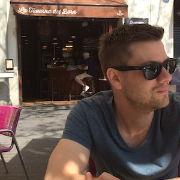

Hello.
I am Andy.
I am a data science leader motivated by data-driven decision making, especially when applied to environmental issues. I have experience in the field of fisheries economics, credit risk modelling, and leading data science teams.
I'm inspired by opportunity for open data and data science to change make meaningful change in our world. I write about economic and social trends in my home province of Saskatchewan on Substack and I contribute to a handful of open source data science projects on GitHub.
My wife, daughter, and I enjoy spending time outdoors as much as possible.